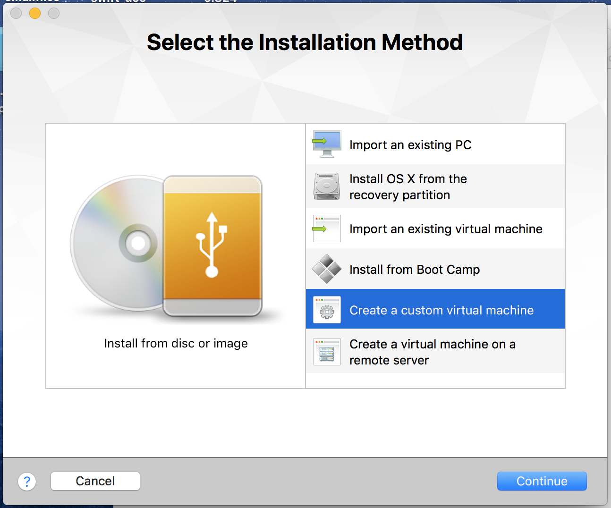
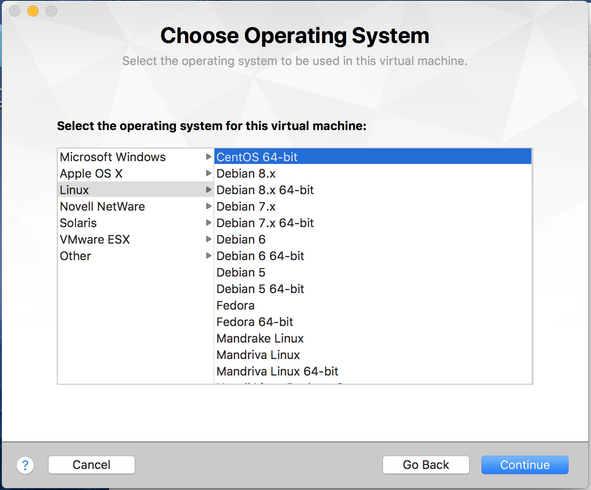
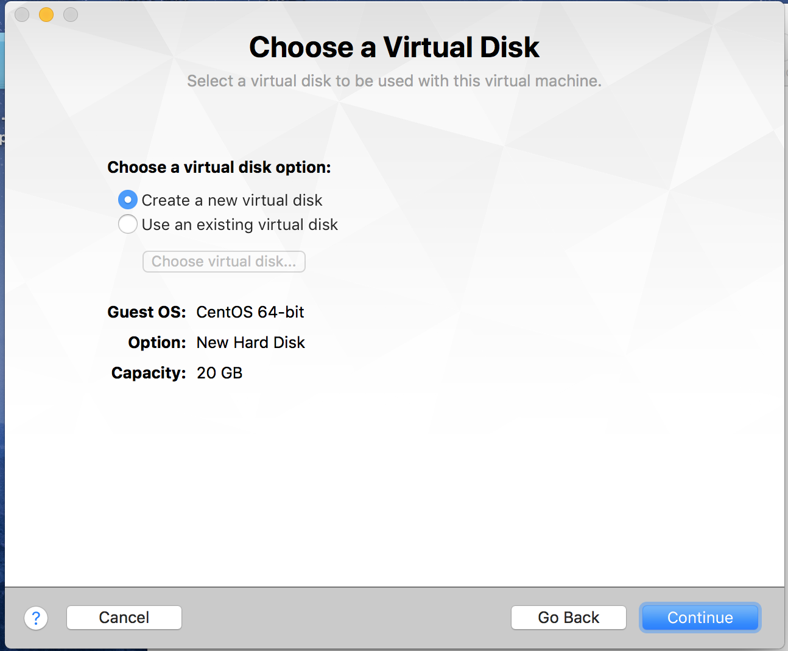
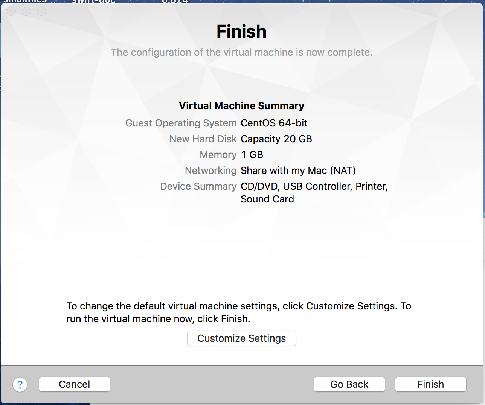

此文记录自己安装centos时的一些步骤纯粹为了下次安装更加快速的完成，因为在前段时间删除虚拟机之后发现一下子想不起来是怎么安装的centos，需要求助搜索引擎和一步步的探索才能完成。
第0步 安装vmware和下载centos
下载centos从之前的6版本切换到了7版本，此处为了保持和目前线上机器的版本一致，可以使自己能更适应新版的centos。
第1步 创建centos虚拟机

选择Create a custom virtual machine

选择对应的版本CentOS 64-bit

选择Create a new virtual disk

选择Customize Settings，然后选择Save.
然后开始设置配置，主要如下：
- Processors & Memory (4core 8G)
- Hard Disk (80G)
- CD/DVD (IDE) (此处一定需要设置，将下载的iso加入配置中，并且需要连接DVD)
然后开始安装，更改mini 安装模式，添加gnome桌面，然后进入正常的linux安装界面。之后一切就比较顺利。
最后可能需要安装图形界面：yum groupinstall “GNOME Desktop”，重启进入root执行“init 5”
##注意事项
###新版系统需要改变设置
Please check System Preferences ==>Security&Privacy==>Privacy==>Accessibility, make sure you have added Fusion into the list.
###键盘切换快捷键：
cmd + G ： 切到虚拟机
cmd + control：切到mac系统